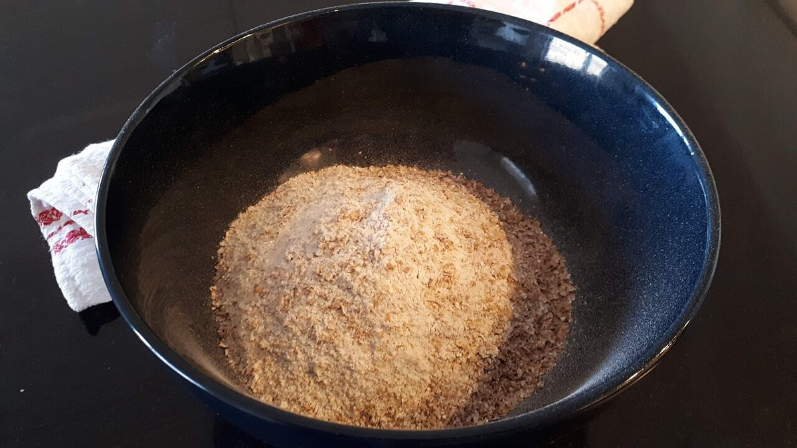

SMALL BAKERY
小さなパン屋トリオ
No.3 — 三重県四日市市
制作側の連想
「小さな」と「トリオ」から、マッチ箱を思った
お店の名前の由来は分かりません。制作側は「小さな」「トリオ(三つ組)」という響きから、小さな箱に三つの引き出しが並ぶ、マッチ箱のようなものを連想しました。そこでこのサイトは、マッチ箱のラベルと引き出しの見た目で作っています。これは制作側の連想であり、お店の理念・由来とは無関係です。
三つの引き出し(イメージ)
ひき出しを、少しずつ引く。
中の写真は、国外・撮影地不明のフリー素材です。お店で扱っているものではなく、四日市市の風景でもありません。
ひき出し 一
粉と麦
パンの材料のイメージ

撮影地不明のイメージ 
撮影地不明のイメージ 
国外のイメージ(スウェーデン) ひき出し 二
かたちいろいろ
パンの形のイメージ

撮影地不明のイメージ 
撮影地不明のイメージ 
撮影地不明のイメージ ひき出し 三
ひと切れ
切り分けたパンのイメージ

撮影地不明のイメージ 
撮影地不明のイメージ 
撮影地不明のイメージ
ご案内
確認できていること
| 所在地 | 〒510-0007 三重県四日市市別名5丁目4-24 |
|---|---|
| 電話 | 090-9196-7506 |
| 営業時間 | 準備中 |
| 定休日 | 準備中 |
| ご予約 | 準備中 |
| 駐車場 | 準備中 |
| SNS | Instagram @smallbakery_torio |